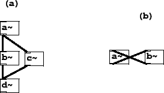
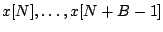
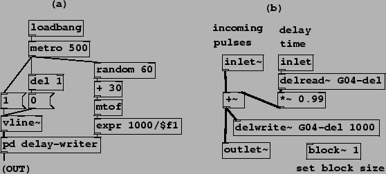
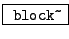
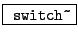

When using delays (as well as other state-sharing tilde objects in Pd), the order in which the writing and and reading operations are done can affect the outcome of the computation. Although the tilde objects in a patch may have a complicated topology of audio connections, in reality Pd executes them all in a sequential order, one after the other, to compute each block of audio output. This linear order is guaranteed to be compatible with the audio interconnections, in the sense that no tilde object's computation is done until all its inputs, for that same block, have been computed.
Figure 7.26 shows two examples of tilde object topologies and their translation into a sequence of computation. In part (a) there are four tilde objects, and because of the connections, the object a~ must produce its output before either of b~ or c~ can run; and both of those in turn are used in the computation of d~. So the possible orderings of these four objects are ``a-b-c-d" and ``a-c-b-d". These two orderings will have exactly the same result unless the computation of b~ and c~ somehow affect each other's output (as delay operations might, for example).
|  |
Part (b) of the figure shows a cycle of tilde objects. This network cannot be sorted into a compatible sequential order, since each of a~ and b~ requires the other's output to be computed first. In general, a sequential ordering of the tilde objects is possible if and only if there are no cycles anywhere in the network of tilde objects and their audio signal interconnections. Pd reports an error when such a cycle appears. (Note that the situation for control interconnections between objects is more complicated and flexible; see the Pd documentation for details.)
To see the effect of the order of computation on a
delwrite~/delread~ pair, we can write explicitly the input
and output signals in the two possible orders, with the minimum possible
delay. If the write operation comes first, at a block starting at sample
number  , the operation can be written as:
, the operation can be written as:
On the other hand, suppose the delread~ object comes before the
delwrite~. Then the samples
 have not
yet been stored in the delay line, so the most recent samples that
may be read belong to the previous block:
Looking back at the patches of Figures 7.24 and 7.25, which
both feature recirculating delays, the delread~ or vd~ object must be placed
earlier in the sequence than the delwrite~ object. This is true of any
design in which a delay's output is fed back into its input. The minimum
possible delay is  samples. For a (typical) sample rate of 44100 Hertz and
block size of 64 samples, this comes to 1.45 milliseconds. This might not
sound at first like a very important restriction. But if you are trying to tune
a recirculating comb filter to a specific pitch, the highest you can get only
comes to about 690 Hertz. To get shorter recirculating delays you must increase
the sample rate or decrease the block size.
samples. For a (typical) sample rate of 44100 Hertz and
block size of 64 samples, this comes to 1.45 milliseconds. This might not
sound at first like a very important restriction. But if you are trying to tune
a recirculating comb filter to a specific pitch, the highest you can get only
comes to about 690 Hertz. To get shorter recirculating delays you must increase
the sample rate or decrease the block size.
Example G04.control.blocksize.pd (Figure 7.27) shows how the block size can be controlled in Pd using a new object:
|  |
,
:
Set the local block size of the patch window the object sits in. Block sizes
are normally powers of two. The switch~ object, in addition, can be used to
turn audio computation within the window on and off, using control messages.
Additional creation arguments can set the local sample rate and specify
overlapping computations (demonstrated in Chapter 9).
In part (a) of the figure (the main patch), a rectangular pulse is sent
to the pd delay-writer subpatch, whose output is then returned to the
main patch. Part (b) shows the contents of the subpatch,
which sends the pulses into
a recirculating delay. The block~ object specifies that, in this
subpatch, signal computation uses a block size ( ) of only one. So the
minimum achievable delay is one sample instead of the default 64.
) of only one. So the
minimum achievable delay is one sample instead of the default 64.
Putting a pulse (or other excitation signal) into a recirculating comb filter to make a pitch is sometimes called Karplus-Strong synthesis, having been described in a paper by them [KS83], although the idea seems to be older. It shows up for example in Paul Lansky's 1979 piece, Six Fantasies on a Poem by Thomas Campion.